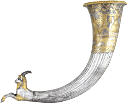
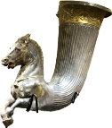
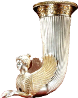

RTR: Imperium Surrectum
RTR: Imperium SurrectumRetinue — W
← all retinue · all traits · wiki index
23 retinue members whose name begins with W. A · B · C · D · E · F · G · H · I · J · K · L · M · N · O · P · Q · R · S · T · U · V · W · X · Y · Z
Wagon of Nerthus
 never alongside Wagon of Sunna, Cauldron · never for 13 of the cultures.
never alongside Wagon of Sunna, Cauldron · never for 13 of the cultures.
Effects: +1 Farming, +1 Law, +2 Movement Points
This wagon is used to pull an idol of Nerthus in religious processions.
Cultures that never receive it (13)
Phoenician · Libyan · Caucasian · Anatolian · Iranian · Arab · Indian · Egyptian · Ethiopian · Roman · Greek · Western Hellenistic · Eastern Hellenistic
How it is gained — when a building completes in the governed city
| When | Chance | Conditions | |||||||||
|---|---|---|---|---|---|---|---|---|---|---|---|
| when a building completes in the governed city | 2% | the settlement has Awesome Temple or better · belongs to Semnones · is a general |
---
Wagon of Sunna
 never alongside Wagon of Nerthus, Cauldron · never for 13 of the cultures.
never alongside Wagon of Nerthus, Cauldron · never for 13 of the cultures.
Effects: +1 Cavalry Command, +2 Movement Points
This wagon holds a large bronze disk, sacred to Sunna.
Cultures that never receive it (13)
Phoenician · Libyan · Caucasian · Anatolian · Iranian · Arab · Indian · Egyptian · Ethiopian · Roman · Greek · Western Hellenistic · Eastern Hellenistic
How it is gained — when a building completes in the governed city
| When | Chance | Conditions | |||||||||
|---|---|---|---|---|---|---|---|---|---|---|---|
| when a building completes in the governed city | 2% | the settlement has Awesome Temple or better · belongs to Semnones · is a general |
---
Wailing Woman
 never alongside Floozy, Pet Sheep, Concubine · never for 13 of the cultures.
never alongside Floozy, Pet Sheep, Concubine · never for 13 of the cultures.
Effects: +1 Troop Morale
Many women stand on the sidelines of the battle screaming encouragements at their men, or threatening to kill them in their sleep if they behave cowardly. The Germans are a people frequently on the march, and army baggage trains often included wives and children.
Cultures that never receive it (13)
Phoenician · Libyan · Caucasian · Anatolian · Iranian · Arab · Indian · Egyptian · Ethiopian · Roman · Greek · Western Hellenistic · Eastern Hellenistic
Granted by events.
---
Warrior Slave
 never alongside Exotic Slave, Body Slave, Civilized Slave · never for 10 of the cultures.
never alongside Exotic Slave, Body Slave, Civilized Slave · never for 10 of the cultures.
Effects: +1 Influence, +1 Personal Security, +1 Bodyguard Valour, -1 Combat vs Free Peoples
It’s not so hard to find a slave skilled in weapons and fighting, but it’s hard to find a loyal one.
Acquisition is tied to the trait: No Enemies.
Cultures that never receive it (10)
Gallic · Germanic · Dacian · Celtiberian · Brittonic · Thracian · Greek · Western Hellenistic · Eastern Hellenistic · Roman
How it is gained — on enslaving a captured city
| When | Chance | Conditions | When | Chance | Conditions | ||||||
|---|---|---|---|---|---|---|---|---|---|---|---|
| on enslaving a captured city | 5% | the target faction is not of Gallic culture · the target faction is not of Celtiberian culture · the target faction is not of Brittonic culture · the target faction is not of Germanic culture · the target faction is not of Dacian culture · the target faction is not of Thracian culture · the target faction is not of Scythian culture · has No Enemies | on enslaving a captured city | 1% | the target faction is not of Gallic culture · the target faction is not of Celtiberian culture · the target faction is not of Brittonic culture · the target faction is not of Germanic culture · the target faction is not of Dacian culture · the target faction is not of Thracian culture · the target faction is not of Scythian culture · has No Enemies |
---
Watchman
 never alongside Overseer, Torturer, Bandit · never for 1 of the cultures.
never alongside Overseer, Torturer, Bandit · never for 1 of the cultures.
Effects: +1 Personal Security, +1 Public Security
This man stands as part of the city watch, ready to stop spies, assassins, and the occasional drunk trying to scale the city walls.
Cultures that never receive it (1)
How it is gained — when the governed city riots
| When | Chance | Conditions | When | Chance | Conditions | When | Chance | Conditions | When | Chance | Conditions |
|---|---|---|---|---|---|---|---|---|---|---|---|
| when the governed city riots | 1% | the settlement has Small Stone Wall or better · is a general | when the governed city riots | 2% | the settlement has Stone Wall or better · is a general | when the governed city riots | 3% | the settlement has Large Stone Wall or better · is a general | when the governed city riots | 4% | the settlement has Epic Stone Wall · is a general |
---
Water-Drinking Servant

Effects: +2 Personal Security, +1 Management
By strict Carthaginian law, no slave should ever taste wine, keeping them strictly focused on their duties. This sober, clear-headed attendant ensures the general's camp runs properly and efficiently.
Acquisition is tied to traits: Social Drinker, Wealthy.
How it is gained — at the end of the character's turn
| When | Chance | Conditions | |||||||||
|---|---|---|---|---|---|---|---|---|---|---|---|
| at the end of the character's turn | 1% | ended the turn outside a settlement · belongs to Carthage · has Social Drinker · has Wealthy |
---
Weaponsmith
 never alongside Armourer, Blacksmith, Rune Engraver.
never alongside Armourer, Blacksmith, Rune Engraver.
Effects: +1 Attack, +1 Training Units, +1 Bodyguard Valour, +1 Squalor
This blacksmith’s true love isn’t his family or friends, it’s weapons. Each blade forged with precision, ensuring your enemies fall before you... or at least before your bodyguards do.
Acquisition is tied to traits: Skilled Cavalry Commander, Wealthy.
How it is gained — ending a turn in a settlement
| When | Chance | Conditions | When | Chance | Conditions | When | Chance | Conditions | |||
|---|---|---|---|---|---|---|---|---|---|---|---|
| ending a turn in a settlement | 2% | over 90% of his movement left · the settlement has Awesome Temple or better · has Skilled Cavalry Commander · is a general | ending a turn in a settlement | 2% | over 90% of his movement left · the settlement has Foundry (Industry) or better · has Wealthy | ending a turn in a settlement | 2% | over 90% of his movement left · the settlement has Library of Pergamum · has Skilled Cavalry Commander |
---
Weaver

Effects: +1 Management, +5 Tax Collection
Among the members of the family of this man, this woman stands above the rest. She's a true example for the other ladies of Carthage, as not only is she virtuous and strong, but also skilled in the art of weaving.
Acquisition is tied to the trait: Wealthy.
How it is gained — ending a turn in a settlement
| When | Chance | Conditions | |||||||||
|---|---|---|---|---|---|---|---|---|---|---|---|
| ending a turn in a settlement | 1% | belongs to Carthage · the settlement has Weavery (Urban) or better · Influence above 2 · has Wealthy · 10% chance |
---
White Horse
never alongside Trusty Steed, Blood-Sweating Horse.
Effects: +1 Cavalry Command, +1 Influence
When the drinking was well under way, there came in a Thracian with a white horse, and taking a full horn he said: "I drink your health, King, and present to you this horse. On his back pursuing you shall catch whomever you choose, and retreating you shall not fear the enemy!"
How it is gained — ending a turn in a settlement
| When | Chance | Conditions | |||||||||
|---|---|---|---|---|---|---|---|---|---|---|---|
| ending a turn in a settlement | 1% | of Thracian culture · over 90% of his movement left · is the faction leader · Influence above 4 (plus hidden conditions) |
---
Wild Mule

Effects: -1 Influence
This man has tamed a once wild mule and it now follows him everywhere, like the donkey in The Banshees of Inisherin. Homer says Paphlagonia is a land of wild mules, and one may say it isn't know for anything else but that, or that the average Paphlagonia's intellect is akin to that of a mule, but mules are friendly creatures and so are the Paphlagonians, for they haven't conquered anything in almost a thousand years.
Acquisition is tied to traits: Paphlagonian Culture, Ignorant.
How it is gained — ending a turn in a settlement
| When | Chance | Conditions | When | Chance | Conditions | When | Chance | Conditions | |||
|---|---|---|---|---|---|---|---|---|---|---|---|
| ending a turn in a settlement | 2% | belongs to Paphlagonia · has Ignorant · Influence above 4 · over 90% of his movement left · 10% chance | ending a turn in a settlement | 2% | belongs to Paphlagonia · Influence above 4 · over 90% of his movement left · 10% chance (plus hidden conditions) | ending a turn in a settlement | 2% | is a general · has Paphlagonian Culture · Influence above 4 · over 90% of his movement left · 10% chance |
---
Wilderness Prophet
 never alongside Pontifex · never for 14 of the cultures.
never alongside Pontifex · never for 14 of the cultures.
Effects: +1 Influence
After spending years alone in the wilderness, talking to birds and rocks, this prophet has emerged with 'divine insight.' Now, if only someone would actually listen to his mutterings. He’s convinced the gods are watching him and that he's just an ancillary of the gods game.
Cultures that never receive it (14)
Gallic · Germanic · Dacian · Celtiberian · Brittonic · Thracian · Phoenician · Libyan · Egyptian · Ethiopian · Greek · Western Hellenistic · Eastern Hellenistic · Roman
How it is gained — at the end of the character's turn, ending a turn in a settlement
| When | Chance | Conditions | When | Chance | Conditions | ||||||
|---|---|---|---|---|---|---|---|---|---|---|---|
| at the end of the character's turn | 2% | ended the turn outside a settlement · at least 35% of his movement left · at most 50% of his movement left · is a general | ending a turn in a settlement | 1% | over 90% of his movement left · the settlement has Pantheion at most · 10% chance · is a general |
---
Wind Reader
 never alongside Shipwright · never for 1 of the cultures.
never alongside Shipwright · never for 1 of the cultures.
Effects: +2 Movement Points
With a full life of experience in the sea, this man can smell the breeze and tell you if it’s time to hoist the sails or prepare for a storm.
Cultures that never receive it (1)
How it is gained — at the end of the character's turn
| When | Chance | Conditions | When | Chance | Conditions | When | Chance | Conditions | When | Chance | Conditions |
|---|---|---|---|---|---|---|---|---|---|---|---|
| at the end of the character's turn | 2% | is an admiral · under 10% of his movement left · belongs to Trinovantes | at the end of the character's turn | 2% | is an admiral · under 10% of his movement left · belongs to Galatians | at the end of the character's turn | 2% | is an admiral · under 10% of his movement left · belongs to Arverni | at the end of the character's turn | 2% | is an admiral · under 10% of his movement left · belongs to Semnones |
| at the end of the character's turn | 2% | is an admiral · under 10% of his movement left · belongs to Arevaci |
---
Wine Horn

unique — one in the world at a time · never alongside Wine Horn, Wine Horn · never for 8 of the cultures.Effects: +1 Influence
As soon as the guests were inside, they first greeted one another and drank healths after the Thracian fashion in horns of wine.
Acquisition is tied to the trait: Social Drinker.
Cultures that never receive it (8)
Caucasian · Anatolian · Iranian · Arab · Indian · Phoenician · Libyan · Roman
How it is gained — ending a turn in a settlement
| When | Chance | Conditions | |||||||||
|---|---|---|---|---|---|---|---|---|---|---|---|
| ending a turn in a settlement | 1% | is a general · has Social Drinker · of Thracian culture · Influence above 2 |
---
Wine Horn (Wine Horn2)

unique — one in the world at a time · never alongside Wine Horn, Wine Horn · never for 8 of the cultures.Effects: +1 Influence
As soon as the guests were inside, they first greeted one another and drank healths after the Thracian fashion in horns of wine.
Acquisition is tied to the trait: Social Drinker.
Cultures that never receive it (8)
Caucasian · Anatolian · Iranian · Arab · Indian · Phoenician · Libyan · Roman
How it is gained — ending a turn in a settlement
| When | Chance | Conditions | |||||||||
|---|---|---|---|---|---|---|---|---|---|---|---|
| ending a turn in a settlement | 1% | is a general · has Social Drinker · of Thracian culture · Influence above 2 |
---
Wine Horn (Wine Horn3)

unique — one in the world at a time · never alongside Wine Horn, Wine Horn · never for 8 of the cultures.Effects: +1 Influence
As soon as the guests were inside, they first greeted one another and drank healths after the Thracian fashion in horns of wine.
Acquisition is tied to the trait: Social Drinker.
Cultures that never receive it (8)
Caucasian · Anatolian · Iranian · Arab · Indian · Phoenician · Libyan · Roman
How it is gained — ending a turn in a settlement
| When | Chance | Conditions | |||||||||
|---|---|---|---|---|---|---|---|---|---|---|---|
| ending a turn in a settlement | 1% | is a general · has Social Drinker · of Thracian culture · Influence above 2 |
---
Wine Steward
 never alongside Master of Assassins · never for 6 of the cultures.
never alongside Master of Assassins · never for 6 of the cultures.
Effects: +1 Influence, -1 Management
"Hmmm. Fruity, yielding, with just a hint of oak… from the southern valley I think…"
Acquisition is tied to traits: Social Drinker, Wealthy.
How it is gained — ending a turn in a settlement
| When | Chance | Conditions | When | Chance | Conditions | When | Chance | Conditions | When | Chance | Conditions |
|---|---|---|---|---|---|---|---|---|---|---|---|
| ending a turn in a settlement | 2% | has Social Drinker · over 90% of his movement left · the settlement has Great Bathhouse (Sanitation) · the settlement has Great Forum | ending a turn in a settlement | 1% | has Social Drinker at level 3 or higher · over 90% of his movement left · the settlement has Great Forum · has Wealthy at level 2 or higher · in a region with Grapes | ending a turn in a settlement | 1% | has Social Drinker · over 90% of his movement left · has Wealthy · in a region with Grapes | ending a turn in a settlement | 2% | has Social Drinker · over 90% of his movement left · the settlement has Brewing Quarter (Urban) or better |
---
Wine Trader
 never alongside Slubberdegullion, Brewer · never for 13 of the cultures.
never alongside Slubberdegullion, Brewer · never for 13 of the cultures.
Effects: -2 Unrest, -1 Law, +5 Trading
This merchant imports wine from the Mediterranean world as a luxury drink for Barbarian feasts.
Acquisition is tied to the trait: Social Drinker.
Cultures that never receive it (13)
Phoenician · Libyan · Greek · Western Hellenistic · Eastern Hellenistic · Caucasian · Anatolian · Iranian · Arab · Indian · Egyptian · Ethiopian · Roman
How it is gained — ending a turn in a settlement
| When | Chance | Conditions | When | Chance | Conditions | ||||||
|---|---|---|---|---|---|---|---|---|---|---|---|
| ending a turn in a settlement | 2% | has Social Drinker · over 90% of his movement left · the settlement has Pottery Kiln (Urban) or better · of Gallic, Celtiberian, Brittonic, Germanic, Dacian or Thracian culture | ending a turn in a settlement | 2% | has Social Drinker · over 90% of his movement left · the settlement has Grape Orchards (Rural) or better · of Gallic, Celtiberian, Brittonic, Germanic, Dacian or Thracian culture |
---
Wise Man

Effects: +1 Management
"Wisdom is knowing when to shut up and listen carefully, young man…"
How it is gained — ending a turn in a settlement, at the end of the character's turn
| When | Chance | Conditions | When | Chance | Conditions | When | Chance | Conditions | When | Chance | Conditions |
|---|---|---|---|---|---|---|---|---|---|---|---|
| ending a turn in a settlement | 1% | is a general · over 90% of his movement left · the settlement has Governor's Villa at most · the settlement has Awesome Temple or better | at the end of the character's turn | 2% | ended the turn in a settlement · over 90% of his movement left · the settlement has Awesome Temple or better · 10% chance · is a general | at the end of the character's turn | 2% | ended the turn in a settlement · over 90% of his movement left · the settlement has Awesome Temple or better · 10% chance · is a general · of Gallic, Celtiberian, Brittonic, Germanic, Dacian, Thracian or Scythian culture | ending a turn in a settlement | 2% | over 90% of his movement left · the settlement has Pantheion at most · 10% chance · is a general |
| ending a turn in a settlement | 2% | over 90% of his movement left · the settlement has Mouseion and the Great Library or better · 10% chance · is a general | ending a turn in a settlement | 2% | over 90% of his movement left · the settlement has Library of Pergamum or better · 10% chance · is a general |
---
Wise Mentor
 never alongside Loyal Retainer, Tutor · never for 7 of the cultures.
never alongside Loyal Retainer, Tutor · never for 7 of the cultures.
Effects: +1 Management
An older, wiser man can be a useful guide, and a sounding board in times of trouble. He teaches young commanders on how to become formidable leaders, whether they like it or not.
Acquisition is tied to traits: Educated in Carthage, Ignorant, Wealthy.
Cultures that never receive it (7)
Gallic · Germanic · Dacian · Celtiberian · Brittonic · Thracian · Scythian
How it is gained — on coming of age, ending a turn in a settlement
| When | Chance | Conditions | When | Chance | Conditions | When | Chance | Conditions | When | Chance | Conditions |
|---|---|---|---|---|---|---|---|---|---|---|---|
| on coming of age | 3% | his father has at most level 2 of Ignorant | on coming of age | 15% | his father has Wealthy at level 2 or higher | on coming of age | 15% | hidden conditions only | ending a turn in a settlement | 1% | over 90% of his movement left · the settlement has Small School (Civic) or better · does not have Ignorant · 10% chance · is a general |
| on coming of age | 15% | has Educated in Carthage at level 1 · 10% chance |
---
Wise Woman
 never alongside Herbalist, Doctor, Chirugeon · never for 13 of the cultures.
never alongside Herbalist, Doctor, Chirugeon · never for 13 of the cultures.
Effects: +1 Fertility, +10 Battle Surgery
"Slap that poultice on and you'll feel better in no time. And yes, it's supposed to smell like that!"
Cultures that never receive it (13)
Phoenician · Libyan · Caucasian · Anatolian · Iranian · Arab · Indian · Egyptian · Ethiopian · Greek · Western Hellenistic · Eastern Hellenistic · Roman
How it is gained — ending a turn in a settlement, at the end of the character's turn
| When | Chance | Conditions | When | Chance | Conditions | When | Chance | Conditions | |||
|---|---|---|---|---|---|---|---|---|---|---|---|
| ending a turn in a settlement | 2% | is a general · over 90% of his movement left · the settlement has Physician's Clinics (Healing) or better | at the end of the character's turn | 2% | ended the turn in a settlement · over 90% of his movement left · the settlement has Awesome Temple or better · 10% chance · is a general | at the end of the character's turn | 2% | ended the turn in a settlement · over 90% of his movement left · the settlement has Physician's Clinics (Healing) or better · 10% chance · is a general |
---
Witch
 never alongside Wise Woman · never for 13 of the cultures.
never alongside Wise Woman · never for 13 of the cultures.
Effects: +1 Fertility
"The bones hold many secrets... of the past... of the future!" Villagers fear her, but they also won’t make a single move without consulting her first.
Acquisition is tied to the trait: Immoral.
Cultures that never receive it (13)
Phoenician · Libyan · Caucasian · Anatolian · Iranian · Arab · Indian · Egyptian · Ethiopian · Greek · Western Hellenistic · Eastern Hellenistic · Roman
How it is gained — ending a turn in a settlement, at the end of the character's turn
| When | Chance | Conditions | When | Chance | Conditions | ||||||
|---|---|---|---|---|---|---|---|---|---|---|---|
| ending a turn in a settlement | 3% | has Immoral · over 90% of his movement left · the settlement has Physician's Clinics (Healing) or better | at the end of the character's turn | 1% | ended the turn in a settlement · over 90% of his movement left · the settlement has Physician's Clinics (Healing) or better · 10% chance · is a general |
---
Wolf Warrior
never for 8 of the cultures.
Effects: +2 Bodyguard Valour, -1 Defence, +1 Attack
A fierce warrior following the old ways. He largely keeps to himself and his howling to the moon is a peculiar characteristic, but nobody can doubt his ferocity in battle!
Cultures that never receive it (8)
Caucasian · Anatolian · Iranian · Arab · Indian · Phoenician · Libyan · Roman
How it is gained — after a battle
| When | Chance | Conditions | |||||||||
|---|---|---|---|---|---|---|---|---|---|---|---|
| after a battle | 1% | won the battle · killed at least 60% of the enemy · is a general · of Dacian culture |
---
Wrestler
 never for 6 of the cultures.
never for 6 of the cultures.
Effects: +1 Influence, +1 Law, +1 Personal Security
When diplomacy fails, and it usually does, this man can step in and make sure things get 'settled' the old-fashioned way.
Acquisition is tied to the trait: Anger.
How it is gained — ending a turn in a settlement
| When | Chance | Conditions | When | Chance | Conditions | When | Chance | Conditions | |||
|---|---|---|---|---|---|---|---|---|---|---|---|
| ending a turn in a settlement | 2% | has Anger at level 2 or higher · over 90% of his movement left · the settlement has Governor's Palace at most | ending a turn in a settlement | 2% | is a general · over 90% of his movement left · the settlement has Stadion (Leisure) or better · 10% chance | ending a turn in a settlement | 2% | over 90% of his movement left · the settlement has Plato's Academy or better · the settlement has Public Baths (Sanitation) or better · 10% chance · is a general |